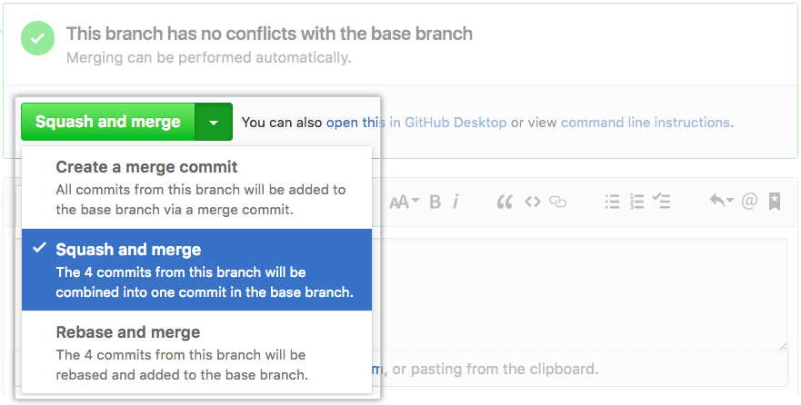
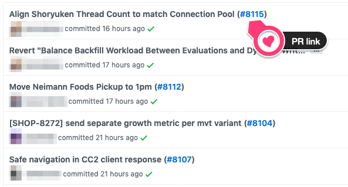

your git skills
your git skills
Ben Limmer
@blimmer
Desired Takeaways
- understand the two main schools of thought on commit history
- understand the three github PR merge options
- understand common gotchas with rewriting history
- master a new
gitcommand or two
Plumbing vs. Porcelain
We’ll stick mostly to using porcelain commands, but reading the plumbing docs is highly recommended once you’re familiar with these concepts.
A Tale of Two Histories
Two main schools of thought on commit history
School 0:
“It’s a record of what actually happened”
It’s a historical document, valuable in its own right, and shouldn’t be tampered with. From this angle, changing the commit history is almost blasphemous; you’re lying about what actually transpired. So what if there was a messy series of merge commits? That’s how it happened, and the repository should preserve that for posterity.
source: git book
Who could forget such classics as…


or my personal favorite…

Some of these are, of course, shown in jest and the commit messages could be improved.
This really is a record of exactly what happened.
However, the historical record can be difficult to traverse.
School 1:
“It’s the story of how your project was made”
You wouldn’t publish the first draft of a book, and the manual for how to maintain your software deserves careful editing. This is the camp that uses tools like rebase and filter-branch to tell the story in the way that’s best for future readers.
source: git book
Which gives you commits like these…


School 0
vs.
School 1
School 0
“It’s a record of what actually happened”
Pros
- Easy
- Low-Risk / Barrier to Entry
- History records what “really happened”
Cons
- Lots of micro-commits, with varying levels of meaning
- More commits === more time traversing the logs
School 1
“It’s the story of how your project was made”
Pros
- Clean, meaningful history
- No “WIP”, “Initial”, etc. commits
Cons
- Must be careful with rewriting history
- Can create very “macro” commits containing a lot of code
on the two schools ?
The Three Github PR Options

source: github help docs
{kind=link}
Create a Merge Commit
Merge
A merge occurs when you want to integrate two branches together.
When you merge feature/add-behavior into develop, it performs a three-way merge between the two latest branch snapshots (C4 and C5) and the most recent common ancestor of the two (C1), creating a new snapshot (and commit - C6).

This is fine, but we’ve produced another commit which might not have value.
Additionally, we have feature branch commits intermixed within the history of develop.

on merging ?
Rebase and Merge

A rebase takes one or more commits and reapplies it on top of new commits on the destination branch.
When you rebase feature/add-behavior off of develop, it works by going to the common ancestor of the two branches (C1), generating diffs for each subsequent commit (C2/C3/C5), and replays each commit.

Then, the merge can occur as a “fast-forward” merge, creating no merge commit.

The result of the merge and the rebase are functionally the same, except the rebase history looks more linear.
Create a Merge Commit
Rebase and Merge
on rebase and merge ?
Squash and Merge

A “squash” takes one or more commits, creates a single commit from those commits and applies it to the destination branch.
When you squash feature/add-behavior, it conceptually rebases the branch as before.
But then, it "squashes" the commits (C6/C7/C8) into one commit.
All the commits from the branch are now contained in one commit (C9).

Then, the merge can occur as a “fast-forward” merge, creating no merge commit.
Just like a rebase and merge.
You should also update the commit messages as you squash and merge.
By default it is just a “starred” list of all your commit messages:
Take the few extra minutes to add some thought about what the code does. It may prove helpful to a future dev who finds your code.
on squash and merge ?
Recap on GitHub Merge Options
Create a Merge Commit
Rebase and Merge
Squash and Merge
My General Preference
I prefer to use “Squash and Merge” 90% of the time.
It produces history like this:


A developer that finds this commit years down the road would have lots of context and information on why we changed the code in this way.
The individual commits are still also viewable within the PR, and the branch can be restored in its original state, if needed.
Your team can enforce their preferred merge methods on a per-repo basis.
Gotchas with Rewriting History
Remember our squash and merge from before?
What would happen if someone branched off of our branch before we squashed and merged?
Their branch would still know about commits C2/C3/C5, but those commits don't exist anymore...
Charlie’s branch has commits C2/C3/C5 from when he originally branched from Bob’s branch.
When Bob merges, he creates C9 and “rewrites history” so that C2/C3/C5 don’t end up on develop. But Charlie’s branch still knows about Bob’s original commits.
To fix this, we need to help git understand what’s going on.
git rebase --onto develop feature/add-behavior feature/add-more-behavior
or replay the last two commits only (ours):
git rebase --onto develop HEAD~2
This will result in a nice clean graph:

However, when you try to push, git might tell you that you can’t…
> git push origin feature/add-more-behavior
To github.com:blimmer/example-repo.git
! [rejected] add-more-behavior -> add-more-behavior (non-fast-forward)
error: failed to push some refs to 'git@github.com:blimmer/example-repo.git'
hint: Updates were rejected because the tip of your current branch is behind
hint: its remote counterpart. Integrate the remote changes (e.g.
hint: 'git pull ...') before pushing again.
hint: See the 'Note about fast-forwards' in 'git push --help' for details.
git is warning us that history has changed in a way that it doesn’t understand. it’s suggesting a git pull, but that’s not what we want to do (that will re-integrate C2/C3/C5 from origin!)
we need to tell git that we know what we’re doing and that we just rebased.
> git push --force-with-lease origin feature/add-more-behavior
origin will now happily accept our newly rebased version of our branch.

--force-with-lease ???
--force-with-lease
Checks to make sure that no-one pushed an additional commit to your branch before you rebased.
TLDR; use --force-with-lease and if you get a warning that looks like this:
> git push --force-with-lease origin feature/add-more-behavior
[rejected] add-more-behavior -> add-more-behavior (stale info)
error: failed to push some refs to 'git@github.com:blimmer/example-repo.git'
Check out who else is working on your branch.
Also, an alias is really handy here. Add this to ~/.gitconfig.
[alias]
pushf = push --force-with-lease
Then you can do this instead
git pushf origin feature/add-more-behavior

on rewriting history gotchas?
PSA
you (almost) never need to merge the same branch into itself
commit history on the develop branch

what happened?
> git push origin develop
To github.com:blimmer/example-repo.git
! [rejected] develop -> develop (non-fast-forward)
error: failed to push some refs to 'git@github.com:blimmer/example-repo.git'
hint: Updates were rejected because the tip of your current branch is behind
hint: its remote counterpart. Integrate the remote changes (e.g.
hint: 'git pull ...') before pushing again.
hint: See the 'Note about fast-forwards' in 'git push --help' for details.
we never want to force push our default branch like with our other branches.
we want to integrate the missed commit and replay our commit.
git pull origin develop --rebase
this will replay our commit after the missed upstream commit
now git will happily accept the branch without any force push because the histories match upstream and locally.
git push origin develop
I highly recommend protecting at least your default branch in GitHub.

on why you almost never need to merge your own branch into itself?
Other git tricks
git add -pgit revertgit bisect
git add -p
another tool to use instead of
git add .
steps through each file patch by patch, staging as you go.
Imagine a change at the top and bottom of a file, but they’re not related to the same change.
diff --git a/README.md b/README.md
index 8cb1ada..81f96b0 100644
--- a/README.md
+++ b/README.md
@@ -1,5 +1,7 @@
# 1-Up Your Git Skills
+A change up top.
+
A talk given at the Ibotta Engineering Lunch and Learn series on August 29, 2017.
This presentation was created with [reveal-ck](https://github.com/jedcn/reveal-ck).
@@ -16,3 +18,5 @@ If you want to run this project locally:
3. Run `bundle exec reveal-ck generate`
4. Run `bundle exec reveal-ck serve`
5. Visit http://localhost:10000
+
+A change at the bottom.
diff --git a/README.md b/README.md
index 8cb1ada..81f96b0 100644
--- a/README.md
+++ b/README.md
@@ -1,5 +1,7 @@
# 1-Up Your Git Skills
+A change up top.
+
A talk given at the Ibotta Engineering Lunch and Learn series on August 29, 2017.
This presentation was created with [reveal-ck](https://github.com/jedcn/reveal-ck).
Stage this hunk [y,n,q,a,d,/,j,J,g,e,?]? n
@@ -16,3 +18,5 @@ If you want to run this project locally:
3. Run `bundle exec reveal-ck generate`
4. Run `bundle exec reveal-ck serve`
5. Visit http://localhost:10000
+
+A change at the bottom.
Stage this hunk [y,n,q,a,d,/,K,g,e,?]? y
On branch update-talk
Changes to be committed:
(use "git reset HEAD <file>..." to unstage)
modified: README.md
Changes not staged for commit:
(use "git add <file>..." to update what will be committed)
(use "git checkout -- <file>..." to discard changes in working directory)
modified: README.md
git revert
with squash and merge this is easy!
git revert 1e736b8
git push origin develop
then, checkout a new branch, revert the revert and fix it up.
git checkout -b feature/revert-revert-filtering-rps
git revert 43baa57
git bisect
git bisect
use binary search to find the commit that introduced a bug

Steps:
- Tell
gitthat we want to bisect. - Mark a
goodcommit (where the problem doesn’t exist). - Mark a
badcommit (where the problem does exist). - Find where the bug was introduced.
git bisect example
source
> cat test.txt
row
row
row
your
car
gently
down
the
stream
> git log
commit d6c3e9b9cc226db47b96c926e35c3ca8733a618b (HEAD -> master)
Author: Ben Limmer <ben@benlimmer.com>
Date: Mon Aug 28 18:00:31 2017 -0600
Adding the word 'stream'
commit 06ecaeb65e34c2a1999e0df388d6740d827700cd
Author: Ben Limmer <ben@benlimmer.com>
Date: Mon Aug 28 18:00:31 2017 -0600
Adding the word 'the'
commit 8483a605ca3a0ee2114217d85bfd350dbe32c6c4
Author: Ben Limmer <ben@benlimmer.com>
Date: Mon Aug 28 18:00:31 2017 -0600
Adding the word 'down'
commit a01f608a342d01f6e0f190575e505119de23b64d
Author: Ben Limmer <ben@benlimmer.com>
Date: Mon Aug 28 18:00:31 2017 -0600
Changing the word 'boat' to 'car'
commit 025c6896d02fbad81ad7425542ec58e762a84d79
Author: Ben Limmer <ben@benlimmer.com>
Date: Mon Aug 28 18:00:31 2017 -0600
Adding the word 'gently'
commit cdc7bf7a1d671343e27fba67a94ce462b8ee009b
Author: Ben Limmer <ben@benlimmer.com>
Date: Mon Aug 28 18:00:31 2017 -0600
Adding the word 'boat'
commit 155b346e7765aa052ac93667090f7bbb59f8ce52
Author: Ben Limmer <ben@benlimmer.com>
Date: Mon Aug 28 18:00:31 2017 -0600
Adding the word 'your'
commit 4b240a2c69b96b3e13dcd86ad3dd147111cbc20c
Author: Ben Limmer <ben@benlimmer.com>
Date: Mon Aug 28 18:00:30 2017 -0600
Adding third row
commit 4460700b737a791b6d5f83ec1a58fc8442cb397a
Author: Ben Limmer <ben@benlimmer.com>
Date: Mon Aug 28 18:00:30 2017 -0600
Adding second row
commit e5d679e901d5de14dff803c7d51fb39fc569d0f4
Author: Ben Limmer <ben@benlimmer.com>
Date: Mon Aug 28 18:00:30 2017 -0600
Adding first row
git bisect to the rescue!
first, tell git that we want to bisect.
git bisect start
mark the commit where we knew things were OK.
commit cdc7bf7a1d671343e27fba67a94ce462b8ee009b
Author: Ben Limmer <ben@benlimmer.com>
Date: Mon Aug 28 18:00:31 2017 -0600
Adding the word 'boat'
git bisect good cdc7bf7a1d671343e27fba67a94ce462b8ee009b
and mark where we know it’s bad.
commit d6c3e9b9cc226db47b96c926e35c3ca8733a618b (HEAD -> master)
Author: Ben Limmer <ben@benlimmer.com>
Date: Mon Aug 28 18:00:31 2017 -0600
Adding the word 'stream'
git bisect bad d6c3e9b9cc226db47b96c926e35c3ca8733a618b
now step through and check it out at each step in the binary search.
Bisecting: 2 revisions left to test after this (roughly 1 step)
[a01f608a342d01f6e0f190575e505119de23b64d] Changing the word 'boat' to 'car'
> cat test.txt
row
row
row
your
car
gently
git bisect bad
Bisecting: 0 revisions left to test after this (roughly 0 steps)
[025c6896d02fbad81ad7425542ec58e762a84d79] Adding the word 'gently'
> cat test.txt
row
row
row
your
boat
gently
git bisect good
a01f608a342d01f6e0f190575e505119de23b64d is the first bad commit
commit a01f608a342d01f6e0f190575e505119de23b64d
Author: Ben Limmer <ben@benlimmer.com>
Date: Mon Aug 28 18:00:31 2017 -0600
Changing the word 'boat' to 'car'
:100644 100644 9eb95934daee636eba60587a2aef592cd5edacc1 34802b80cf929a42035c7b02dae715c864e9caa8 M test.txt
:000000 100644 0000000000000000000000000000000000000000 9eb95934daee636eba60587a2aef592cd5edacc1 A test.txt-e
on anything else
Resources
git help <command-name>
Thanks!

Ben Limmer
@blimmer
hello@benlimmer.com
Legal Stuff
I was heavily influenced by the Git Book, which is licensed under the
Creative Commons Attribution Non Commercial Share Alike 3.0 license, thus this presentation is also subject to the same license.
You need to attribute it if you use it, indicate if changes were made and distribute any remix of this work under the same license.
I cribbed the “two schools of thought” from that book and added my opinions.